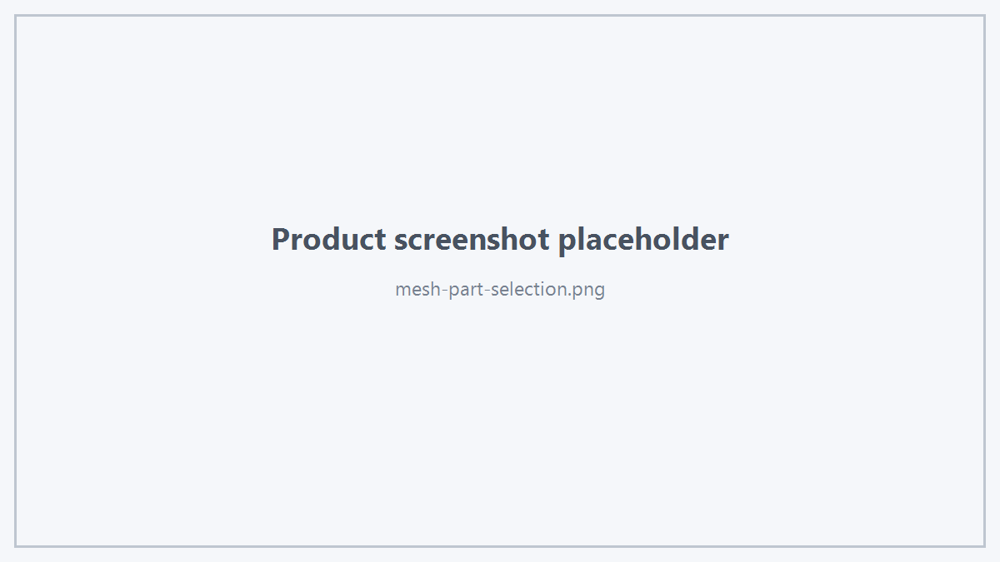

Hts Viewer SDK 为 CAE Mesh 提供独立的数据模型与控制接口。
1. Mesh 类型
enum class HtsMeshElementType
{
Surface,
Volume
};
elementType 表示完整 Mesh 结果的业务类型，不是单个渲染 Primitive 类型。
2. HtsMeshDisplayData
struct HtsMeshDisplayData
{
std::string meshId;
HtsMeshElementType elementType;
std::vector<HtsMeshPartData> parts;
bool visible;
};
meshId 应稳定且非空。
3. Mesh Part
HtsMeshPartData 是一个 Mesh 内可独立编辑、样式化和显隐的稳定 Part。
Triangle
当 triangleIndices 非空时：
- 每 3 个 index 表示一个三角形；
- 所有 index 必须小于 vertices.size()。
当 triangleIndices 为空时：
- vertices 按 triangle soup 解释；
- vertices.size() 必须是 3 的倍数。
Stable IDs
可选：
- vertexIds
- triangleIds
- edgeIds
如果提供，数量必须与对应几何元素数量匹配。
Edge
当 edgeIndices 非空时：
- 每 2 个 index 表示一条线段；
- index 必须小于 edgeVertices.size()。
当 edgeIndices 为空时：
- edgeVertices 按 line segment soup 解释；
- 数量必须是 2 的倍数。
最小数据要求
一个 Part 至少应包含一个 Triangle 或 Edge。
4. 完整 Mesh 提交
HtsMeshDisplayData mesh;
mesh.meshId = "FEM_Result";
mesh.elementType = HtsMeshElementType::Volume;
viewer.upsertMeshData(mesh);
5. Part 增量更新
viewer.upsertMeshPart(meshId, part);
用于新增或替换单个 Part，而不要求业务层重新提交其他 Part。
删除：
viewer.removeMeshPart(meshId, partId);
6. Staged Mesh Update
需要分阶段组织一个完整 Mesh 时：
viewer.beginMeshUpdate(meshId, true);
for (const auto& part : parts) {
if (!viewer.appendMeshPart(meshId, part)) {
viewer.cancelMeshUpdate(meshId);
return;
}
}
if (!viewer.endMeshUpdate(meshId)) {
viewer.cancelMeshUpdate(meshId);
}
公开契约说明：
- replaceExisting=true：从空 staged 数据开始；
- replaceExisting=false：基于当前 Mesh 快照开始，并只允许追加新的 Part ID；
- 同一个 meshId 再次 begin 会替换此前未完成 staged transaction；
- endMeshUpdate() 成功时发布 staged Mesh；
- 如果 endMeshUpdate() 失败，当前 live mesh 和 staged transaction 保持不变，可由调用者重试或取消；
- cancelMeshUpdate() 不改变当前正在显示的 Mesh。
7. Mesh Display Mode
enum class HtsMeshDisplayMode
{
ShadedWithMeshLines,
Shaded,
Wireframe,
TransparentWithMeshLines
};
8. 全局 Mesh Display Options
HtsMeshDisplayOptions options = viewer.meshDisplayOptions();
options.mode = HtsMeshDisplayMode::ShadedWithMeshLines;
options.opacity = 1.0f;
viewer.applyMeshDisplayOptions(options);
公开设置包括：
- face / edge / volume edge color；
- selected colors；
- opacity；
- transparent opacity；
- edge width；
- volume edge width；
- edge softness；
- ambient / diffuse；
- volume edge；
- x-ray；
- lighting；
- two-sided；
- shader enabled。
9. 可见性
完整 Mesh：
viewer.setMeshVisible(meshId, false);
Part：
viewer.setMeshPartsVisible(meshId, partIds, false);
只显示指定 Part：
viewer.showOnlyMeshParts(meshId, partIds);
查询：
bool visible = false;
viewer.meshPartVisible(meshId, partId, visible);
10. Selection
viewer.setSelectedMeshParts(meshId, partIds);
清除：
viewer.clearMeshSelection(meshId);
查询：
auto selected = viewer.selectedMeshPartIds(meshId);

Mesh Part Selection
11. Part Style
HtsMeshPartStyle style;
style.hasFaceColor = true;
style.faceColor = {1.0f, 0.5f, 0.1f, 1.0f};
viewer.setMeshPartStyle(meshId, partId, style);
清除：
viewer.clearMeshPartStyle(meshId, partId);
12. Statistics
HtsMeshStatistics stats = viewer.meshStatistics(meshId);
包括：
- Part Count
- Vertex Count
- Triangle Count
- Volume Edge Count
- Estimated Memory Bytes
 1.18.0
1.18.0